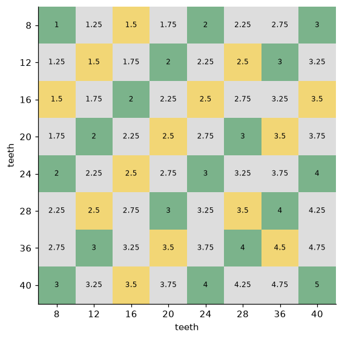
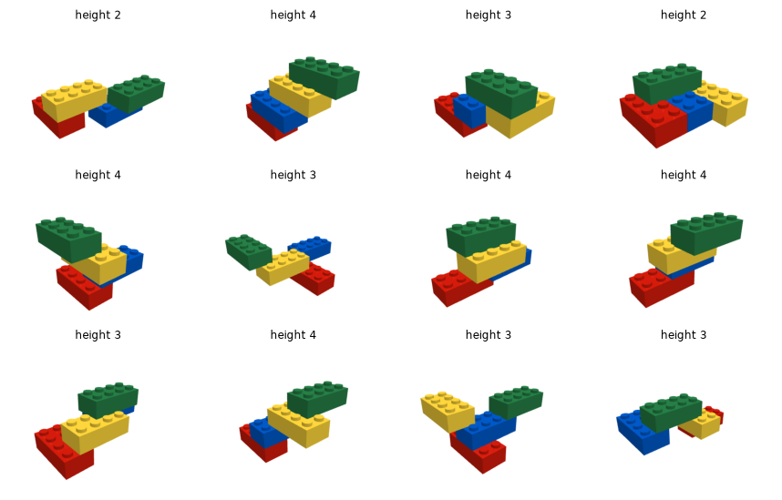
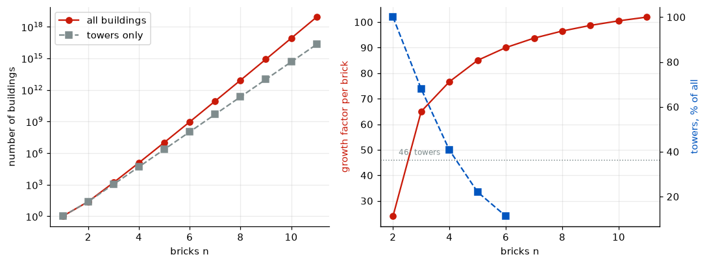

A lattice of 8 mm and 3.2 mm, Pythagoras and gears again, and the problem of counting what six bricks can build
The geometry of the LEGO system as a lattice (the 2:5 plate ratio, building sideways, Technic diagonals and which gears mesh), and the counting problem: why LEGO’s famous figure for six bricks was wrong, an enumeration that reproduces the published counts, and how fast the number of buildings grows.
mechanics
lego
combinatorics
number theory
python
Author
Paul Milne
Published
October 27, 2026
The Meccano steam shovel turned out to be a lesson in number theory: a construction set built on a ½-inch grid is full of Pythagorean triples, and its gears were sized so that every pair lands on the grid. LEGO is a lattice too, but a stranger one. Its studs are 8 mm apart, while its plates are 3.2 mm tall, so the vertical and horizontal grids do not match, and that one ratio shapes how everything in the system fits together.
The second half of the post is a famous counting problem. For decades LEGO said that six 2×4 bricks could be combined in 102,981,500 ways. The true figure, found by the mathematician Søren Eilers, is 915,103,765. The post works out where the old number came from, reproduces the published counts with a short program, and looks at how fast the count grows.
Show code
import sys, math, time, warningsfrom pathlib import Pathfrom fractions import Fractionwarnings.filterwarnings("ignore")here = Path.cwd().resolve()ROOT =next(p for p in (here.parents[1] /"lego-bricks", here.parent /"lego-bricks", here.parents[1] /"mechanics"/"lego-bricks") if (p /"bricks").exists())sys.path.insert(0, str(ROOT))import numpy as npimport matplotlib.pyplot as pltfrom bricks import geometry as geofrom bricks.count import (DIMS, enumerate_buildings, by_height, towers, canon, attachments, PUBLISHED, PUBLISHED_BY_HEIGHT)from bricks.render import BrickRenderer, random_buildingplt.rcParams.update({"figure.dpi": 110, "axes.grid": True, "grid.alpha": 0.25,"axes.spines.top": False, "axes.spines.right": False})RED, BLUE, YELLOW, GREEN, GREY ="#c91a09", "#0055bf", "#e8b923", "#237841", "#7f8c8d"renderer = BrickRenderer(n_bricks=6, width=480, height=360)
Figure 1: A six-brick building, one of the 915,103,765 (MuJoCo render).
About the sources
The counts of LEGO buildings are from Søren Eilers and his collaborators, as published on his page and in the On-Line Encyclopedia of Integer Sequences (links at the end); the program below reproduces the ones a laptop can reach. LEGO’s dimensions are the widely published nominal ones. The list of Technic gears is from memory of the system, so check it against a parts reference before quoting it.
The LEGO lattice
Two grids that do not match
The basic dimensions are few:
Show code
rows = [("stud pitch (stud to stud)", geo.PITCH), ("plate height", geo.PLATE), ("brick height (3 plates)", geo.BRICK), ("stud diameter", geo.STUD_D), ("stud height", geo.STUD_H)]for name, v in rows: fr = Fraction(v / geo.PITCH).limit_denominator(5) exact =abs(float(fr) - v / geo.PITCH) <1e-12print(f"{name:28s}{v:5.1f} mm = {str(fr) if exact elsef'{v / geo.PITCH:.4f}'} of a stud pitch")
stud pitch (stud to stud) 8.0 mm = 1 of a stud pitch
plate height 3.2 mm = 2/5 of a stud pitch
brick height (3 plates) 9.6 mm = 6/5 of a stud pitch
stud diameter 4.8 mm = 3/5 of a stud pitch
stud height 1.7 mm = 0.2125 of a stud pitch
The ratio that matters is \(\text{plate} : \text{pitch} = 3.2 : 8 = 2 : 5\). A brick, three plates, is \(6/5\) of a pitch. So a stack of \(b\) bricks and \(p\) plates is
\[
h = (3b + p)\cdot\tfrac{2}{5}\ \text{pitches},
\]
which is a whole number of studs only when \(3b + p\) is a multiple of 5. The smallest stack that lands back on the horizontal grid is five plates: one brick and two plates make exactly two studs. Every serious builder knows that rule. It is why Technic bricks, whose holes run sideways through them on the stud pitch, are stacked with two plates between each pair. The holes then fall on a square grid, two studs apart in both directions.
Building sideways
Modern models often turn parts on their sides, the technique builders call SNOT (studs not on top). A sideways part brings its own lattice, rotated a quarter turn: one stud along what was the height, 0.4 of a stud along what was the width. The two lattices coincide only at points that are on both:
because \(\tfrac{2}{5}k\) is an integer only when 5 divides \(k\), and then it is even. So upright and sideways building can only meet every two studs in each direction. That is why sideways work is full of special parts (brackets, jumper plates with a single central stud, headlight bricks) whose job is to make up the half-stud and fifth-of-a-stud differences.
Figure 2: Upright building (black dots: one stud across, one plate up) and sideways building (red circles: one plate across, one stud up) in the same 8-stud square. The two lattices only coincide every two studs (blue squares): one brick and two plates.
Pythagoras in Technic
Technic beams have holes on the stud pitch, so a diagonal beam, like a Meccano strip, fits exactly only when its length is a whole number of holes. On the flat, that again means Pythagorean triples: the \((3, 4, 5)\) triangle and its multiples are the only exact diagonals inside ten studs.
What happens when the diagonal climbs through a stack of Technic bricks and plates? Then one side is \(x\) studs across and the other is \(p\) plates up, \(0.4p\) studs, and
The right-hand side is a multiple of 25, so \(5 \mid 2p\), so \(5 \mid p\): an exact diagonal can only rise by whole studs, in steps of one brick and two plates. Plates give no shortcuts; the vertical grid has to be squared up first. The search agrees:
Show code
print("flat, whole studs: ", [(int(a), int(b), int(c)) for a, b, c in geo.diagonals(10)])print("through bricks/plates: ", [(f"{a:g} across", f"{p} plates up", f"{c:g} long")for a, p, c in geo.diagonals(10, vertical_plates=True, half=True)])
Technic gears are cut to a module of 1 mm, so a gear with \(N\) teeth has a pitch diameter of \(N\) mm. Two meshing gears sit \((N_1 + N_2)/2\) mm apart, which is
\[
d = \frac{N_1 + N_2}{16}\ \text{studs}.
\]
The gears come in two families. The spur gears have 8, 16, 24 and 40 teeth: multiples of 8. The double-bevel gears have 12, 20, 28 and 36: each 4 more than a multiple of 8. Within a family \(N_1 + N_2\) is a multiple of 8, so \(d\) is a whole or half number of studs and the pair can be mounted on the grid (on half studs with the right beams). Across the families \(N_1 + N_2 \equiv 4 \pmod 8\), so \(d\) ends in a quarter stud, and a spur gear and a double-bevel gear never mesh in line on the grid. Meccano’s gears, by contrast, were all odd multiples of 19 teeth, which made every pair fit.
Show code
G =list(geo.GEARS)M = np.zeros((len(G), len(G)))for i, a inenumerate(G):for j, b inenumerate(G): d = (a + b) /16 M[i, j] =2if d ==int(d) else (1if2* d ==int(2* d) else0)from matplotlib.colors import ListedColormapfig, ax = plt.subplots(figsize=(6.2, 5.2))ax.imshow(M, cmap=ListedColormap(["#dddddd", "#f2d675", "#7bb38b"]), vmin=0, vmax=2)for i, a inenumerate(G):for j, b inenumerate(G): ax.text(j, i, f"{(a + b) /16:g}", ha="center", va="center", fontsize=8)ax.set_xticks(range(len(G)), G); ax.set_yticks(range(len(G)), G); ax.grid(False)ax.set_xlabel("teeth"); ax.set_ylabel("teeth")plt.tight_layout(); plt.show()print("pairs that also fit on a diagonal or across a brick-and-plates stack:")for n1, n2, d, ways in geo.gear_pairs(): extra = [w for w in ways ifnot w.startswith("in line")]if extra:print(f" {n1:2d} + {n2:<2d}{d:g} studs: {', '.join(extra)}")

Figure 3: Centre distance of every pair of Technic gears, in studs. Green: a whole number of studs (mounts in line on any beam); yellow: a half stud (needs a half-stud offset); grey: a quarter stud, which never lands on the grid. Spur gears (8–40) mesh with spur gears and bevels with bevels, never across.
pairs that also fit on a diagonal or across a brick-and-plates stack:
12 + 28 2.5 studs: 1.5 across, 5 plates up
16 + 24 2.5 studs: 1.5 across, 5 plates up
20 + 20 2.5 studs: 1.5 across, 5 plates up
40 + 40 5 studs: diagonal 3x4, 3 across, 10 plates up
The one whole-stud diagonal among Technic gears is the pair of 40-tooth gears, 5 studs apart, which can sit at the \((3, 4)\) offset of the Pythagorean triangle. Three pairs that are 2.5 studs apart fit at a half-stud offset across and one brick and two plates up, which is the \((3, 4, 5)\) triangle again, at half scale.
Meccano and LEGO side by side
Meccano
LEGO
grid
½ inch (12.7 mm), the same in every direction
8 mm across, 3.2 mm up
vertical and horizontal grids
identical
meet every 2 studs (1 brick + 2 plates)
exact diagonals
Pythagorean triples; slotted holes take up near misses
Pythagorean triples, rising only in whole studs
gears
38 teeth per inch of diameter, sizes 19, 57, 95, 133
module 1 mm, spur 8–40 and bevel 12–36
which gear pairs fit
every pair (all sizes are odd multiples of 19)
within a family only
How many ways can you join six bricks?
Two bricks: 24
Put one 2×4 brick down and press a second one onto it. If the second brick is parallel to the first, its four-by-two footprint can be shifted 7 ways along and 3 ways across and still overlap by at least one stud: 21 placements. If it is turned crosswise, it can be shifted 5 ways each way: 25 placements. That makes 46.
But a building does not know which brick was put down first or which way round it stands. Turning the whole thing half a turn about the vertical gives the same building, and maps most placements to a different one of the 46. Burnside’s lemma counts the buildings that remain: the number of distinct buildings is the average number of placements left unchanged by each symmetry. The identity leaves all 46; the half turn leaves only the 2 that are centred, one parallel and one crossed. So
Figure 4: All 24 ways to join two 2×4 bricks: 11 parallel and 13 crossed. The enumeration below generates these from scratch; MuJoCo renders them.
Towers, and LEGO’s famous number
The figure LEGO quoted for many years, 102,981,500 ways to combine six bricks, goes back to a 1974 company newsletter. It counted only towers: buildings six bricks high, each brick on the one below. Each brick can sit on the one beneath it in 46 ways, so there are \(46^5\) towers before symmetry. The half turn pairs them up, except for the towers it leaves unchanged, those with every brick centred on the one below, either parallel or crossed: \(2^5\) of them. Burnside again:
That is LEGO’s number, four short; Eilers suggests the original sum was done on a calculator that could not hold nine digits. But it is the answer to a much narrower question. Six bricks do not have to make a tower: they can stand side by side, straddle gaps and branch.
Counting every building
A building here is any set of \(n\) bricks joined into one piece by their studs, counted once however it is turned about the vertical. Counting them by hand is hopeless after two or three bricks, but they can be generated:
Every connected building of \(n\) bricks has at least one brick whose removal leaves it connected (a leaf of a spanning tree of its connections). So every building of \(n\) bricks can be made by adding one brick to some building of \(n-1\).
Starting from one brick, add a brick in every possible place: above or below any existing brick, in either orientation, at every offset that overlaps it, as long as it does not collide with a brick in the same layer.
Reduce each result to a canonical form: rotate it through four quarter turns, move each rotation to the origin, sort its bricks, and keep the smallest. Two buildings are the same exactly when their canonical forms are equal, so a Python set removes the duplicates.
Show code
print(f"enumerated buildings of 1 to 4 bricks in {t_enum:.1f} s\n")print(f"{'bricks':>6s}{'counted here':>13s}{'published':>13s} by height: here | published")for n inrange(1, 5): here_h = by_height(levels[n]) if n >1else {1: 1} pub_h = PUBLISHED_BY_HEIGHT.get(n, {1: 1})print(f"{n:6d}{len(levels[n]):13,d}{PUBLISHED[n]:13,d}{here_h} | {pub_h}")print("\ntowers from the formula:", {n: towers(n) for n inrange(2, 7)})
enumerated buildings of 1 to 4 bricks in 1.9 s
bricks counted here published by height: here | published
1 1 1 {1: 1} | {1: 1}
2 24 24 {2: 24} | {2: 24}
3 1,560 1,560 {2: 500, 3: 1060} | {2: 500, 3: 1060}
4 119,580 119,580 {2: 11707, 3: 59201, 4: 48672} | {2: 11707, 3: 59201, 4: 48672}
towers from the formula: {2: 24, 3: 1060, 4: 48672, 5: 2238736, 6: 102981504}
The program reproduces every published count it reaches, split by height, and the formula gives the tallest column of each row, ending in LEGO’s 102,981,504. Beyond four bricks the numbers outgrow a simple Python set: there are about ten million buildings of five bricks. Eilers and Mikkel Abrahamsen counted six bricks with a careful program that never stores the buildings, only counts them, which is how the 915,103,765 was found.
Show code
rng = np.random.default_rng(3)four =sorted(levels[4])pick = [four[i] for i in rng.choice(len(four), 12, replace=False)]fig, axes = plt.subplots(3, 4, figsize=(10, 6))for ax, b inzip(axes.flat, pick): ax.imshow(renderer.image(b, azimuth=140, elevation=-26)[10:-10, 30:-30]); ax.axis("off") ax.set_title(f"height {max(x[2] for x in b) +1}", fontsize=8)plt.subplots_adjust(wspace=0.02, hspace=0.12); plt.show()

Figure 5: Twelve of the 119,580 buildings of four bricks, chosen at random from the enumeration, with their heights.
How fast it grows
The published counts now run to eleven bricks; the eleventh term was added to the integer-sequence encyclopedia only this month. The ratio of each count to the one before tells how many new buildings each extra brick multiplies the total by.
Show code
n = np.array(sorted(PUBLISHED))T = np.array([PUBLISHED[k] for k in n], dtype=float)tw = np.array([towers(k) for k in n], dtype=float)fig, ax = plt.subplots(1, 2, figsize=(10, 3.8))ax[0].semilogy(n, T, "o-", color=RED, label="all buildings")ax[0].semilogy(n, tw, "s--", color=GREY, label="towers only")ax[0].set_xlabel("bricks n"); ax[0].set_ylabel("number of buildings"); ax[0].legend()ratio = T[1:] / T[:-1]ax[1].plot(n[1:], ratio, "o-", color=RED, label="T(n) / T(n−1)")ax[1].axhline(46, color=GREY, ls=":", lw=1); ax[1].text(2.2, 48, "46: towers", fontsize=8, color=GREY)share = [PUBLISHED_BY_HEIGHT[k][k] / PUBLISHED[k] *100for k inrange(2, 7)]tx = ax[1].twinx(); tx.plot(range(2, 7), share, "s--", color=BLUE); tx.set_ylabel("towers, % of all", color=BLUE)tx.grid(False); tx.spines["right"].set_visible(True)ax[1].set_xlabel("bricks n"); ax[1].set_ylabel("growth factor per brick", color=RED)plt.tight_layout(); plt.show()for k, r inzip(n[1:], ratio):print(f"n = {k:2d}: {PUBLISHED[k]:>26,d} x {r:6.2f}")

Figure 6: Left: the number of buildings of n bricks (log scale), all of them and towers only. Right: the ratio of successive counts, and the share of buildings that are towers.
n = 2: 24 x 24.00
n = 3: 1,560 x 65.00
n = 4: 119,580 x 76.65
n = 5: 10,166,403 x 85.02
n = 6: 915,103,765 x 90.01
n = 7: 85,747,377,755 x 93.70
n = 8: 8,274,075,616,387 x 96.49
n = 9: 816,630,819,554,486 x 98.70
n = 10: 82,052,796,578,652,749 x 100.48
n = 11: 8,364,925,094,730,088,313 x 101.95
Towers grow by a factor of 46 per brick, but buildings grow faster and faster: each new brick can go on any of the others, and side by side as well as on top. The factor passes 100 at ten bricks and is still rising. The towers’ share falls from all of the two-brick buildings to about a ninth of the six-brick ones, which is why LEGO’s figure was out by a factor of nine.
Durhuus and Eilers proved that the number of buildings grows exponentially, \(T(n) \approx \lambda^n\) in the long run, and pinned the base \(\lambda\) between roughly 78 and 191. The ratios above suggest it lies somewhat above 100, but the exact value is still unknown: a simple question about a children’s toy that remains open.
Next
The lattice and the count are the static half of LEGO. Two follow-ups would put the bricks into motion in MuJoCo: a Technic walking linkage whose link lengths must be whole numbers of holes, and the structural question of how far a brick cantilever can reach when its studs can pull apart.